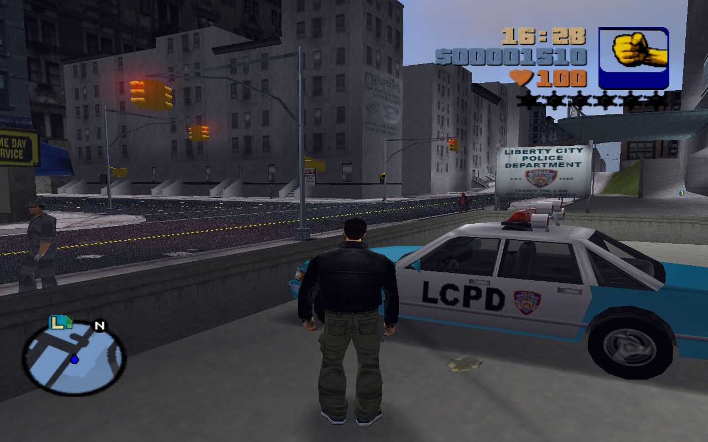
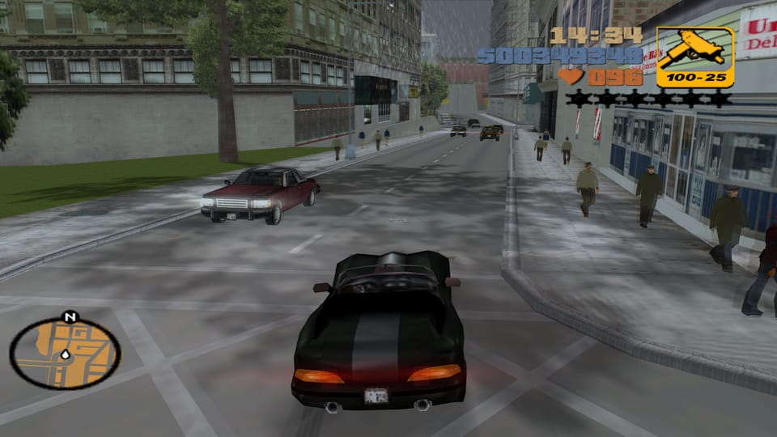
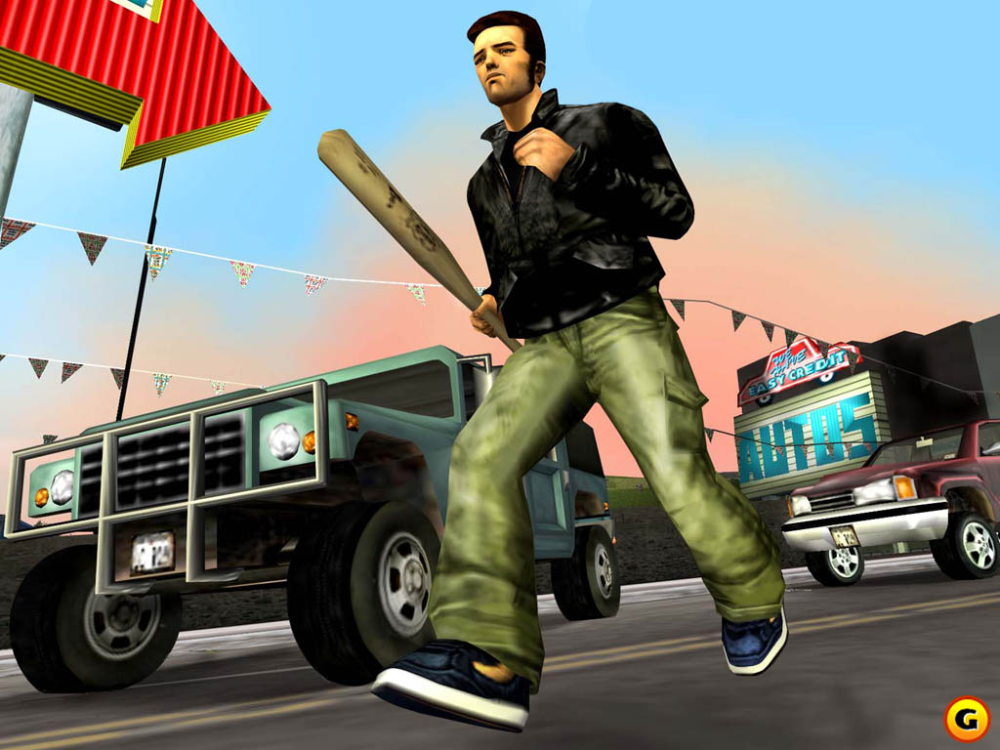

Grand Theft Auto III is an action-adventure game played from a third-person perspective. Players complete missions—linear scenarios with set objectives—to progress through the story. It is possible to have several missions available at a time, as some missions require players to wait for further instructions or events. Outside of missions, players can freely roam the game’s open world and have the ability to complete optional side missions. Liberty City is composed of three boroughs: Portland, Staunton Island, and Shoreside Vale; the islands are unlocked to players as the story progresses.1 The game features a large cast of characters, many of whom are voiced by actors who have worked in films or television shows. The game also features an extensive soundtrack, which includes music from various genres. The game’s open world design was praised by critics, many of whom felt that it was a major improvement over its predecessor Grand Theft Auto II. However, the game’s graphics and character models were criticized for being outdated.1
  To buy the game open this link